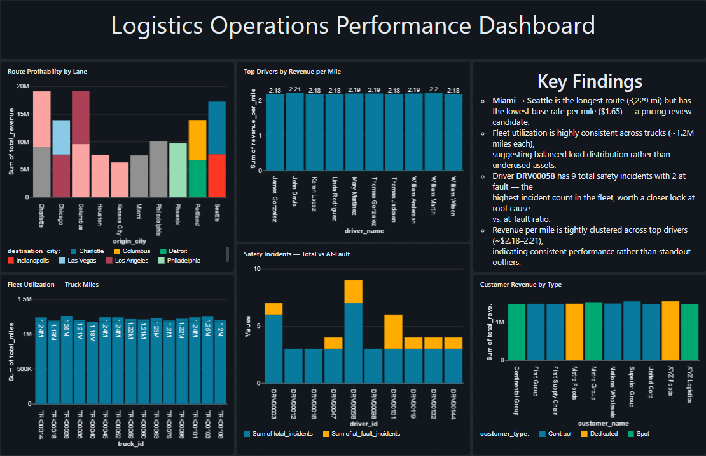

An end-to-end Databricks pipeline for a trucking and logistics operational database, built on the medallion architecture and finishing in a live Lakeview dashboard covering driver performance, route profitability, fleet utilization, and safety.
First project in a three-part Data & Systems Analyst portfolio, built around a trucking and logistics company's operational database: 14 relational tables covering drivers, trucks, trailers, customers, facilities, routes, loads, trips, fuel purchases, maintenance, deliveries, and safety incidents, sourced from Kaggle (yogape/logistics-operations-database). Around 85,000 trips, 196,000 fuel purchases, and 171,000 delivery events.
Built on the medallion architecture in Databricks (Bronze → Silver → Gold), using PySpark and Delta Lake tables end to end, then surfaced through a Databricks Lakeview dashboard with five business-facing visuals.
Bronze (workspace.bronze) holds all 14 raw tables, ingested 1:1 from CSV via PySpark with inferred schema and no transformation, plus lineage columns (_ingested_at, _source_file) added on the way in.
Silver (workspace.silver) is the cleaned and joined layer. The centerpiece is trips_fact, a star-schema fact table built by joining trips to loads, drivers, trucks, and trailers, with drivers/trucks/trailers/customers/routes acting as the surrounding dimensions. Row count going in matched row count coming out exactly, 85,410 to 85,410, confirming a clean one-to-one join with no fan-out. fuel_purchases and delivery_events were also promoted to Silver, with delivery_events gaining a computed delay_minutes field.
Gold (workspace.gold) holds five business-ready aggregate tables: driver_performance, route_profitability, truck_utilization, customer_analysis, and safety_metrics, each one feeding directly into a dashboard visual.
Three stages of the pipeline, from raw ingestion through to a business aggregation. Full files are linked below.
Bronze — ingestion loop (01_bronze_ingestion.py)
Silver — the trips_fact join (02_silver_transformations.py)
Gold — driver performance aggregation (03_gold_aggregations.py)
Bronze ↗ · Silver ↗ · Gold ↗ · Dashboard SQL ↗ · README ↗
Five visuals built directly on the Gold layer: top drivers by revenue per mile, route profitability by lane, fleet utilization, customer revenue concentration, and safety incidents (total vs at-fault).

Rate calculations use sum(revenue) / sum(miles) rather than an average of pre-computed per-trip ratios, which avoids a Simpson's-paradox-style distortion where short high-rate trips would otherwise skew the average.
Raw files were ingested through Unity Catalog Volumes rather than the deprecated DBFS mount pattern, and input_file_name(), which Unity Catalog does not support, was swapped for _metadata.file_path.
A second Kaggle dataset (global supply chain risk) was initially loaded, then evaluated and excluded once it turned out to share no keys or grain with the logistics-ops data. Forcing it in would have meant a fabricated join, so it was left out and documented as a scoping decision instead.
No filtering was applied on trip_status, so all trips are included regardless of completion state. No explicit null or duplicate-key validation step was run against the source data before modeling. Both are documented here rather than glossed over, and would be the first things to add in a production version of this pipeline.